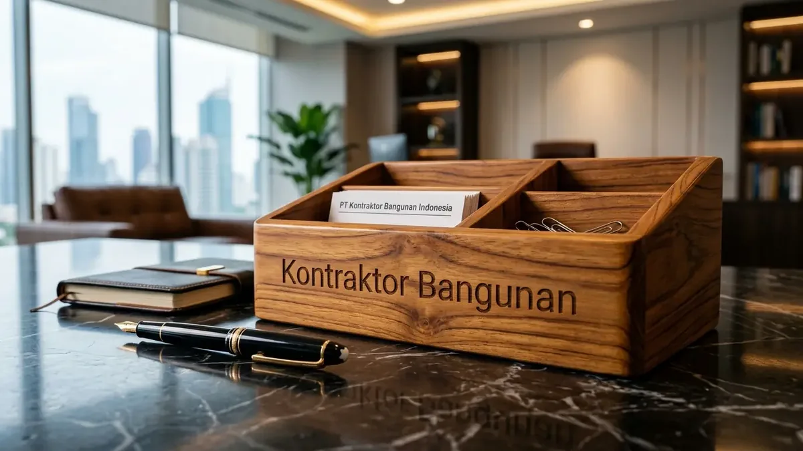

Mengapa Pemilihan Genteng Sangat Krusial pada Bangunan Iklim Tropis?
Iklim tropis dengan curah hujan rata-rata di atas 2.500 mm per tahun menuntut genteng berdaya tahan termal tinggi serta sistem penguncian kedap air.
Kondisi geografis Indonesia menghadapkan atap bangunan pada dua tantangan ekstrem yang terjadi silih berganti: radiasi panas sinar ultraviolet berkekuatan tinggi di siang hari, disusul terpaan hujan deras berintensitas lebat secara mendadak. Fenomena ekspansi termal (muai-susut) ini sering kali menyebabkan material genteng konvensional berkualitas rendah mengalami retak rambut mikro.
Berdasarkan data statistik Lembaga Pengembangan Jasa Konstruksi (LPJK) & Asosiasi Bahan Bangunan Indonesia periode 2025/2026, tercatat lebih dari 62% kasus kerusakan elemen interior dan plafon gypsum rumah tinggal berakar dari kebocoran atap akibat pemilihan jenis genteng yang tidak sesuai dengan sudut kemiringan bangunan. Oleh sebab itu, mengenal jenis genteng tahan bocor sebelum memulai pengerjaan struktur atap adalah keputusan mutlak yang tidak boleh dikompromikan.
- Tingkat Porositas: Pastikan koefisien penyerapan air (water absorption) berada di bawah 8% agar genteng tidak menyerap kelembapan dan menjadi berat.
- Profil Pengunci (Locking Rib): Pilih profil genteng yang memiliki bibir pengunci ganda (double interlock) untuk menahan tampias air hujan horizontal.
- Ketahanan Beban Lentur: Standar SNI 0096 mensyaratkan kekuatan beban lentur minimal 120 kgf agar genteng tidak mudah pecah saat diinjak teknisi.
- Lapisan Reflektif Termal: Lapisan pelindung luar harus mampu memantulkan panas inframerah untuk menjaga efisiensi suhu ruangan.
Apa Saja Karakteristik dan Spesifikasi Genteng Tahan Bocor Standar SNI?
Genteng tahan bocor wajib memenuhi standar interlocking rapat, toleransi dimensi presisi di bawah 1 mm, dan lapisan permukaan anti lumut.
Dalam konstruksi modern, ketahanan air sebuah bidang atap ditentukan oleh interaksi mekanis antar keping genteng. Ketika air hujan mengalir dengan debit tinggi, sambungan antar kepingan harus mampu memecah tekanan air dan mengarahkannya langsung ke talang tanpa ada celah kapiler yang memungkinkan air merayap ke arah berlawanan.
Berikut adalah 3 jenis material genteng utama yang terbukti memiliki performa anti bocor terbaik untuk bangunan residensial maupun komersial:
- Genteng Keramik Berglazur: Terbuat dari tanah liat pilihan yang dipanaskan pada suhu lebih dari 1.100°C dengan lapisan kaca (glazur). Menghasilkan permukaan licin, 100% kedap air, tahan lumut seumur hidup, serta warna yang tidak pernah pudar.
- Genteng Beton Flat Anti Bocor: Dibuat dari campuran semen Portland mutu tinggi dan pasir silika terpadatkan secara ekstrusi hidrolik tekanan tinggi. Dilapisi cat akrilik polymer khusus yang menahan penetrasi air dan memberikan tampilan arsitektur modern minimalis.
- Genteng Metal Berpasir: Menggunakan lembaran baja galvalum (zincalume) berlapis batu batuan vulkanik alami. Sangat ringan, tidak mudah bergeser saat badai, dan lapisan pasirnya efektif meredam kebisingan suara rintik hujan.
Perbandingan Genteng Metal vs Keramik dan Genteng Beton Anti Bocor
Komparasi genteng metal vs keramik dan genteng beton terletak pada bobot struktur, isolasi termal, kemiringan minimal, dan usia pakai.
Setiap jenis penutup atap memiliki keunggulan spesifik yang harus disesuaikan dengan kebutuhan bentang bangunan, kemampuan beban pondasi, dan anggaran proyek Anda. Bersama tim ahli Kontraktor Bangunan, kami melakukan simulasi beban struktural dan perhitungan RAB detail untuk menentukan kombinasi terbaik antara rangka baja ringan dan tipe genteng yang dipilih.

Pemeriksaan leveling kelurusan reng dan perkuatan nok samping guna memastikan bidang atap kedap dari rembesan air hujan.
| Parameter Evaluasi | Genteng Keramik Glazur | Genteng Beton Flat | Genteng Metal Berpasir |
|---|---|---|---|
| Bobot per m² | 40 – 45 kg/m² (Sedang-Berat) | 45 – 52 kg/m² (Berat) | 5 – 7 kg/m² (Sangat Ringan) |
| Ketahanan Bocor & Interlock | Sangat Tinggi (Double Interlock) | Tinggi (Interlocking Rapat) | Tinggi (Overlap + Screw Karet) |
| Insulasi Suhu & Suara Hujan | Sangat Sejuk & Sangat Kedap | Sejuk & Sangat Kedap | Memerlukan Insulasi Tambahan |
| Sudut Kemiringan Minimal | 30° – 35° | 25° – 30° | 15° – 20° |
| Ketahanan Lumut & Jamur | Anti Lumut Permanen (Glasir) | Perlu Coating Berkala (5-7 Thn) | Tahan Karat & Jamur |
| Estimasi Usia Pakai | 35 – 50+ Tahun | 25 – 35 Tahun | 20 – 30 Tahun |
Bagaimana Standar Pemasangan Rangka dan Sudut Kemiringan Atap yang Benar?
Pemasangan atap tahan bocor mensyaratkan presisi jarak reng, kemiringan atap proporsional, dan penanganan sambungan nok karpus fleksibel.
Bahkan genteng dengan spesifikasi termahal sekalipun akan bocor jika prosedur instalasi rangka atap menyalahi kaidah rekayasa sipil. Kegagalan atap paling sering terjadi pada pertemuan sudut lembah (juray talang) dan bubungan nok atas. Semen adukan konvensional pada nok bubungan sangat rentan retak akibat getaran angin dan penyusutan adukan, sehingga menjadi jalan masuk air langsung ke kuda-kuda.
Sebagai standar mutu operasional, Kontraktor Bangunan menerapkan sistem pemasangan atap mutakhir berstandar SNI:
- Kalibrasi Jarak Reng Presisi: Pengukuran jarak reng disesuaikan dengan toleransi milimeter sesuai tipe genteng untuk memastikan kaitan modul terkunci sempurna tanpa celah regang.
- Aplikasi Dry Ridge System (Nok Kering): Mengganti adukan semen pasir konvensional dengan lembaran ridge roll flashing berpori mikro yang fleksibel, 100% kedap air, dan memiliki ventilasi uap.
- Pemasangan Underlayment Foil Berperedam: Lapisan membran bituminous atau aluminium foil woven ditempatkan di bawah reng sebagai benteng pertahanan ganda terhadap tampias hujan badai.
- Talang Juray Seng Zincalume Anti Karat: Pemasangan talang juray lembah dengan kedalaman dan lebar yang dihitung berdasarkan debit curahan air hujan maksimal.
Mengapa Mempercayakan Instalasi Atap kepada Kontraktor Bangunan?
Kontraktor Bangunan memberikan jaminan material SNI original, survei kemiringan digital, manajemen proyek transparan, dan garansi resmi 1 tahun.
Menyerahkan pengerjaan atap bangunan kepada Kontraktor Bangunan membebaskan Anda dari kekhawatiran risiko atap roboh, kebocoran musiman, dan pembengkakan biaya tak terduga. Kami memiliki tim arsitek dan tukang atap berpengalaman yang telah tersertifikasi oleh Lembaga Pengembangan Jasa Konstruksi (LPJK).
Setiap pemesanan jasa maupun pengadaan material melalui kami dilengkapi dengan Rincian Anggaran Biaya (RAB) yang transparan, jadwal pengerjaan terukur (curva S), pengawasan berkala, serta sertifikat garansi pemeliharaan resmi hingga 12 bulan penuh.
Pertanyaan yang Sering Diajukan (FAQ)
Kesimpulan Praktis
Mengenal jenis genteng tahan bocor dan memahami standar sudut kemiringan atap adalah kunci utama menciptakan hunian yang aman, nyaman, dan bebas dari ancaman kebocoran di musim hujan. Pastikan pengadaan material dan instalasi atap Anda dikerjakan oleh kontraktor berpengalaman dengan garansi tertulis.